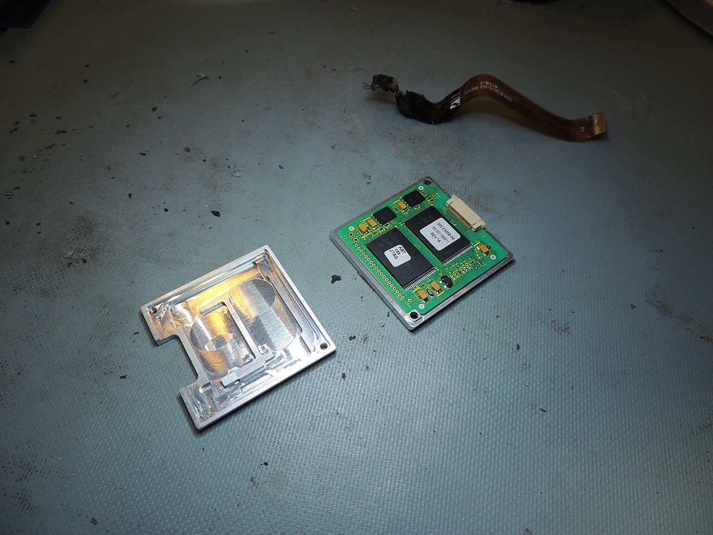
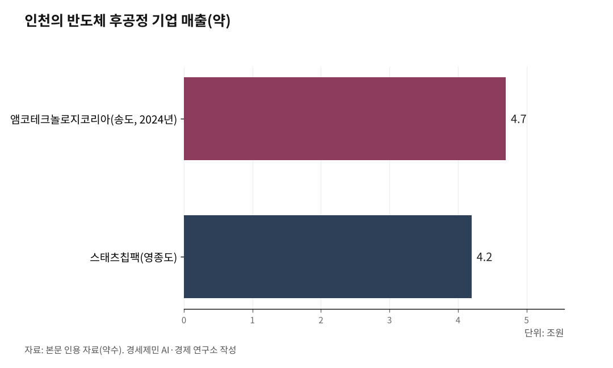

[AI 메모리 전쟁⑤] 개인투자자가 알아야 할 메모리 반도체의 현재와 미래
AI 시대 핵심이 연산 장치(GPU)에서 메모리로 옮겨간다
HBM 다음은 HBF, 메모리 전쟁은 이제 시작이다
삼성전자·SK하이닉스만 있는 게 아니다
1. 메모리가 AI 산업 핵심이 된 배경
AI가 답변을 만들 때 앞에 나온 모든 데이터 관계를 임시 저장 공간에 올려놓는다. 이 공간을 KV 캐시라 한다. K는 키(Key, 단어 간 관련도), V는 밸류(Value, 전달할 정보)다.

이 공간 크기는 입력 데이터 × 동시 접속자 × 계산 정밀도가 곱셈으로 연결돼 있다. 동영상을 넣으면 데이터가 1,000배 늘고, 접속자가 1,000배 늘면, 1,000 더하기 1,000이 아니라 1,000 곱하기 1,000이다. 메모리 수요가 100만 배로 뛴다.
AI 비서가 내 평생 기록을 읽으려면 거대한 메모리가 필요하다. 그 메모리를 만드는 기업이 AI 시대 핵심 기업이 된다.
AI 산업 병목이 연산 장치(GPU) 속도에서 메모리 전송 속도로 옮겨갔다. 미국 반도체 기업 엔비디아 젠슨 황 최고경영자가 2025년 12월 메모리 전송 전용 칩 회사 기술 특허를 200억달러(약 29조원)에 사들인 배경이다.

2. 단기 메모리 HBM, 장기 메모리 낸드, 그리고 HBF
메모리 반도체는 두 종류다.
D램은 전기가 꺼지면 데이터가 사라지는 메모리다. 빠르지만 비싸다. 낸드플래시는 전기가 꺼져도 데이터가 남는 메모리다. 느리지만 싸고 용량이 크다. 스마트폰 저장 공간, USB, 외장 저장장치(SSD)에 들어가는 게 낸드플래시다.
'고대역폭'이란 데이터가 오가는 통로가 넓다는 뜻이다. 한 번에 많은 데이터를 실어 나른다. 이 원리를 D램에 적용한 게 고대역폭메모리(HBM)이고, 낸드에 적용한 게 고대역폭플래시(HBF)다.
AI 메모리는 세 층으로 나뉜다.
첫째, 단기 메모리 HBM이다. 빠른 D램 칩을 수직으로 12~16단 쌓아서 GPU 바로 옆에 붙인다. AI가 당장 생각하는 데 쓰는 작업 책상이다. 빠르지만 비싸고 용량에 한계가 있다.
거리가 멀어지면 전기 저항이 커져 전송 속도가 떨어진다. 가까이 붙일수록 빠르다.
둘째, 장기 메모리 낸드플래시다. 전기가 꺼져도 데이터가 남으니 평생 기록을 영구 저장하는 창고 역할을 한다. AI는 인간과 달리 잊지 않는다. 사용자가 늘수록, 데이터가 쌓일수록, 저장 공간이 끝없이 필요하다.
셋째, HBF다. 느리지만 용량 큰 낸드를 쌓아서 통로를 넓힌 것이다. HBM과 낸드 사이 중간 다리다. HBM이 '작업 책상'이라면 HBF는 '도서관'이다. 자주 꺼내 쓰는 자료를 미리 준비해 HBM으로 빠르게 넘겨준다. 비싼 HBM을 무한정 늘리지 않아도 전체 시스템 용량을 넓힐 수 있다.
SK하이닉스가 2026년 2월 미국 메모리 기업 샌디스크와 HBF 표준화 작업에 착수했다. 시제품은 2026년 말, 서버 탑재는 2027년 전망이다. 'HBM의 아버지' 김정호 한국과학기술원 교수는 "2038년부터 HBF 수요가 HBM을 넘어설 것"이라고 전망했다.
3. 삼성전자와 SK하이닉스가 핵심인 이유
HBM은 D램 칩을 수직으로 정밀하게 쌓아 올리는 기술이다. 불량률을 낮추는 데 최소 3년이 걸린다. 먼저 대규모 투자를 한 기업이 압도적으로 유리하고, 뒤늦게 뛰어드는 기업은 따라잡기 어렵다. 현재 HBM 시장은 SK하이닉스(점유율 50%), 삼성전자(29%), 마이크론(21%) 세 곳이 지배한다.
SK하이닉스는 HBM 선도자다. 엔비디아 물량의 60% 이상을 공급한다. 2025년 3분기 영업이익률 47%다. HBF 표준화도 주도한다.
삼성전자는 6세대 HBM(HBM4)을 앞세워 반격에 나섰다. 2026년 HBM 매출이 전년 대비 189% 성장할 전망이다. 범용 D램, 낸드, 반도체 위탁생산(파운드리)까지 제품 종류가 넓다.
엔비디아 젠슨 황 최고경영자가 "삼성전자와 SK하이닉스 모두 필요하다"고 말했다.
4. 삼성전자·SK하이닉스만 있는 게 아니다
메모리 초호황은 생태계 전체로 퍼진다.
장비 분야다. 인천 한미반도체는 HBM 조립 핵심 장비인 열압착접합장비(TC본더) 세계 점유율 71.2%를 차지한다. 2025년 매출 5,767억원, 영업이익률 43.6%다. 반도체 장비 회사 HPSP는 고압 수소 처리 장비를 세계에서 유일하게 공급한다.
기판 분야다. 회로 기판 회사 이수페타시스는 AI 서버에 들어가는 여러 겹으로 쌓은 회로 기판을 만든다. 반도체 기판 회사 심텍은 SK하이닉스에 HBM 패키지 기판을 납품한다.
반도체 조립·검사(후공정) 분야다. 인천 송도 앰코테크놀로지코리아는 2024년 매출 약 4조7,000억원으로 세계 2위 후공정 전문 기업이다. 영종도 스태츠칩팩은 매출 약 4조2,000억원이다. 두 기업 합계 약 9조원이다.
다만 중소형 관련 종목은 대기업 실적에 연동된다. 대장주가 조정받으면 동반 하락한다. 초호황 기대가 과도하게 반영됐을 때 주가가 먼저 꺾이는 것도 중소형주다.
5. 효율이 올라가도 수요는 줄지 않았다
거대 기술 기업은 메모리 의존도를 낮추려 한다. 머스크는 텍사스에 200억달러(약 30조원) 이상 규모 반도체 공장 '테라팹(Terafab)'을 짓겠다고 나섰다. 엔비디아는 비싼 HBM 대신 멀리 있는 저렴한 낸드 저장소를 광통신으로 연결하는 우회 기술을 시도한다. 다만 GPU 바로 옆에 붙이는 것보다 느리다. 구글과 아마존은 엔비디아 GPU 대신 자체 AI 칩을 확대하고 있다.
2026년 3월 25일 구글이 KV 캐시 메모리를 6배로 줄이는 압축 기법 '터보퀀트(TurboQuant)'를 발표했다. 다음 날 삼성전자 주가가 약 5%, SK하이닉스가 6% 하락했다. 마이크론도 4% 빠졌다.
터보퀀트는 추론(AI가 답변을 만드는 과정) 단계 KV 캐시만 압축한다. AI 학습 단계 메모리 수요는 줄이지 못한다. 영국 투자회사 퀼터셰비오 기술 애널리스트 벤 배린저는 "진화적이지 혁명적이지 않다"고 평했다.
2026년 초 중국 딥시크가 AI 학습 비용을 대폭 낮췄을 때도 같은 일이 벌어졌다. 시장은 공포에 빠져 AI 관련주를 팔았다. 실제로는 거대 기술 기업이 투자를 줄인 게 아니라 늘렸다.
효율이 올라가자 이전에는 엄두를 못 냈던 서비스가 가능해졌고, 그만큼 메모리가 더 필요해졌다. 1865년 영국 경제학자 윌리엄 제번스가 발견한 현상이다. 석탄 효율이 올라가자 석탄 소비가 줄지 않고 오히려 늘었다. 경제학에서 '제번스 역설'이라 부른다.
[참고자료]
· 서울경제, "SK하이닉스, HBM 신화 이을 HBF 표준화 정조준", 2026.2.26.
· 국민일보, "SK하이닉스, 차세대 반도체 'HBF' 글로벌 표준화 착수", 2026.2.27.
· 전자신문, "SK하이닉스, 'HBM4 16단' 최초 공개", 2026.1.9.
· 서울신문, "한미반도체, 2025년 매출 5767억 '역대 최대'", 2026.2.9.
· 뉴스1, "AI 메모리 폭증에 TC 본더 수요 재점화, 한미반도체 '표준' 굳히기", 2025.12.24.
· 대신증권, "2026년 메모리반도체 시장 전망", 2026.1.5.
· 뉴데일리, "엔비디아 공급망이 HBM 승부 갈랐다", 2026.3.30.
· 비즈니스포스트, "삼성·SK하이닉스, 2026년 영업이익 100조 달성 두고 경주", 2025.12.26.
· 글로벌이코노믹, "삼성·SK하이닉스, 2026년 '250조 잭팟' 터진다", 2026.1.21.
· 카운터포인트리서치, HBM 시장 점유율 데이터, 2025.
· AIwire, "Did Google Just Ease the AI Memory Bottleneck?", 2026.3.31.
· Knowledge Hub Media, "Google's TurboQuant: The Compression Breakthrough That Shook the AI Industry", 2026.4.4.
· InvestorPlace, "What TurboQuant Actually Means for AI Memory Stocks", 2026.4.1.
사진 출처
· [대표사진] NTSBgov, "Memory Module (48181368641).jpg", 위키미디어 공용, 퍼블릭 도메인, https://commons.wikimedia.org/wiki/File:Memory_Module_(48181368641).jpg
※ 이 기사는 인공지능을 활용해 작성했습니다.
관련기사
- [AI 메모리 전쟁④] AI 산업 병목이 GPU에서 메모리로 옮겨간다
- [AI 메모리 전쟁③] 대학원생 92%가 AI를 쓰는데 진짜 공부는 어떻게
- [AI 메모리 전쟁②] 토큰 격차가 학력 격차가 된다
- 내 AI는 왜 자꾸 딴 소리를 할까 — 토큰과 메모리가 결정하는 AI 답변의 품질
저작권자 © AI경세제민 무단전재 및 재배포, AI학습 및 활용 금지